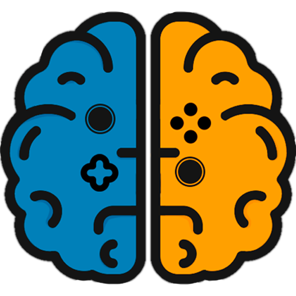

Games for the Human.
Jogos em prol da saúde.
Jogos em prol da saúde.
Jogos Eletrônicos por muito tempo foram considerados apenas um passa tempo ou uma maneira de se divertir, entretanto pesquisas recentes indicam que jogos podem ser usados para auxiliar no tratamento de diversas condições médicas, ao mesmo tempo que divertem o paciente. Nossa missão é tornar tais jogos conhecidos para pacientes e organizações médicas.
Games são uma maneira mais eficaz de se comunicar com o usuário justamente por sua imersão, provando-se uma ferramenta valiosa no tratamento de doenças como ansiedade e depressão.
Carlos Eduardo Gomes Ferreira – RM:81462
Igor Andrade Ramos – RM:80268